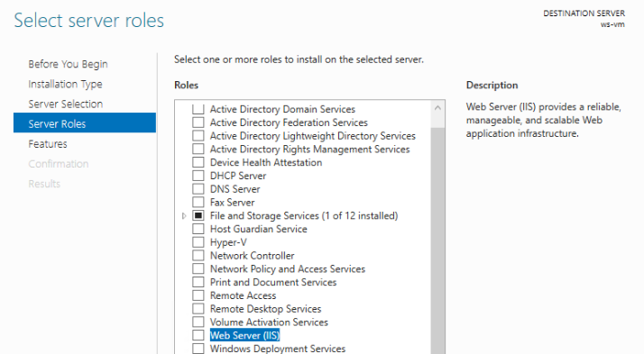

Now that we have learned about remote access mechanisms and the IIS Manager, it’s time to get our hands dirty! In this walkthrough we will:
Note
Some of the az CLI steps are shown in both Windows/PowerShell and Linux/Bash to illustrate the cross-platform nature of the tool with minor syntactical changes. However, to complete this walkthrough will require a local Windows machine in order to use RDP.
As always, we will begin by creating a resource group. This time we will combine creating and configuring it as the default group into one step.
Notice how we use the --query argument to have the output of the create command be just the name of the new resource group. We perform all of this within an in-line execution so the output (the resource group name) can be assigned as the default group value:
> az configure -d group=$(az group create -n <name>-ws-wt --query "name")
# remember in Bash we have to output in tsv format to remove the default JSON quote characters
$ az configure -d group=$(az group create -n <name>-ws-wt -o tsv --query "name")
Next let’s create our Windows Server VM within the new resource group. Windows Server has been around for many years and there are many versions. For our purposes, we will use the latest, 2019, edition. Just as we did with the Ubuntu VM, let’s search the available VM images for the urn of the 2019 Windows Server image. In this case, we need to provide a compound filter that will look for a urn that contains both Windows and 2019:
> az vm image list --query "[? contains(urn, 'Windows') && contains(urn, '2019')] | [0].urn"
# "MicrosoftWindowsServer:WindowsServer:2019-Datacenter:latest"
Let’s assign this value to a variable:
> $WsImageUrn=$(az vm image list --query "[? contains(urn, 'Windows') && contains(urn, '2019')] | [0].urn")
# don't forget to output in tsv format
$ ws_image_urn=$(az vm image list -o tsv --query "[? contains(urn, 'Windows') && contains(urn, '2019')] | [0].urn")
To create our VM we will use most of the same Arguments as we did when creating the Linux machine. Whereas Linux VMs will enable SSH access by default, new Windows Server VMs will have RDP enabled instead. However, recall that RDP uses a basic username and password credential set instead of the RSA keys used in SSH. We will need to provide one additional flag --admin-password when creating the WS VM:
Warning
It is important that you do not change the admin username (student) or password (LaunchCode-@zure1). Although it is a poor practice to use the same password for multiple users, we do so for consistency in order to make it easy to help you debug if somethings goes wrong.
> az vm create -n ws-vm --size "Standard_B2s" --image "$WsImageUrn" --admin-username "student" --admin-password "LaunchCode-@zure1" --assign-identity
$ az vm create -n ws-vm --size "Standard_B2s" --image "$ws_image_urn" --admin-username "student" --admin-password "LaunchCode-@zure1" --assign-identity
Once the VM is created, let’s set is as the default VM:
> az configure -d vm=ws-vm
Now that we have our Windows Server VM, we can get our first taste of using RDP. We will use RDP to enter the desktop of the VM and configure it to deploy our sample application.
Note
You must use a local Windows machine in order to RDP into the VM using the pre-installed mstsc utility.
In order to RDP into a machine you need (at minimum):
studentLaunchCode-@zure1Since we have set the VM as our default we can use the list-ip-addresses command and a query filter to get its value. We will capture the public IP address in a variable so we can use it to RDP into the machine:
> $VmPublicIp=$(az vm list-ip-addresses --query "[0].virtualMachine.network.publicIpAddresses[0].ipAddress")
# output in tsv format
$ vm_public_ip=$(az vm list-ip-addresses -o tsv --query "[0].virtualMachine.network.publicIpAddresses[0].ipAddress")
Now we can use the built-in mstsc command-line utility to open an RDP session with the machine:
> mstsc /v:"$VmPublicIp"
This will begin the RDP authentication process and prompt you to enter your credentials:
The first time you connect to a remote machine (using default RDP settings) you will need to confirm that you trust it. This is due to the default usage of a self-signed server certificate in the VM. The discussion of Public Key Infrastructure (PKI) and certificates is outside of the scope of this course, but in this context the warning is nothing to be concerned about.
Tip
In a production setting, you would likely configure a Group Policy Object (GPO) for enforcing trusted connections. If you are curious feel free to look over the linked article, but do not be concerned if it goes over your head!
For now you can select Don’t ask me again and confirm to continue:
If everything goes well, a new window will appear that gives you access to the full desktop of the remote machine.
The Server Manager application will then open to the dashboard overview:
The SM can be used to monitor and manage fleets of servers, but for our purposes we will focus on a single server. You can select the Local Server tab on the left to switch to a view specific to the current VM:
Take a moment to explore this section of the SM. You can find details about how the server is configured as well as live performance statistics like CPU and memory usage.
Before we can host our application, we need to configure our VM to operate as a Web Server Role. In the top right corner of the SM you will see a Manage dropdown containing an option to Add Roles and Features. This will open the Roles and Features wizard:

Because we are configuring this single server we can select the first option:

We want to select our server by its name. We should only have a single server in our pool:
We want to configure our server to assume the Web Server Role to use the IIS Web Server. You can find this role at the end of the Server Roles list:
Because IIS requires the IIS Management Console to configure it, we are prompted to install the required feature. Although it can be installed and used remotely we will install it locally on this server. Select Add Features to install it:

For our purposes we will not require any other role services beyond the defaults. Feel free to read over what each role service does by selecting it and reading its description on the right side panel. Be careful not to check any boxes beyond those that are already selected by default:
Finally you can continue to the Confirmation tab. Double check that your selections match the list below. The installation process may take a minute or two but will not require a restart:
Once the installation is complete, you can open the IIS Manager. In your taskbar search for IIS:
The IIS Manager dashboard shows all of the servers that are linked to it. In our case, we will see just our single VM listed. Within each Server are sections for configuring the application pools and sites that will be served by IIS from that machine.
IIS includes a pre-configured default site and application pool to get you started. Let’s take a look at the Default site:
From the Sites tab you can see all of the sites that are being served by IIS. Notice how each site has a name, a binding (what port it listens on) and a path to its content directory.
Selecting the Default Site will display the Site dashboard. From here you can configure all of the content-related aspects of the site.
At the bottom of the view is a tab to switch from Features to Content. Selecting the Content tab shows the contents of the site’s directory. For the default site there are just two files, an HTML file and an image:
Within the Content view mode you can select the Explore option on the right-side panel.
This will open the file explorer to the content directory path to see and manage the files directly. Notice how this directory path matches the default site path we saw in the Sites overview earlier:
Once IIS has been installed, through the Web Server Role, it immediately begins serving the default site on port 80. You can open the IE browser within the server to http://localhost to view it. Notice how we do not need to include the port because the browser sets 80 implicitly as the standard HTTP port.
Warning
As part of the Windows Server security default settings, IE is locked down to restrict its usage. Unless you have good reason to stray from these defaults, you should accept them and proceed to viewing the default site.
So far, we have been able to connect to the default site within the server itself. But what about connecting to it publicly over the Internet? By now you should understand that navigating to http://localhost on your local machine will not request the default site.
Instead, we will need to use the public IP address of our VM in place of localhost. This should make sense because it is not locally hosted anymore, it is publicly hosted! Or is it?
On your local machine, open your browser and navigate to http://<your VM public IP>:
Before continuing, take a moment to consider why the connection timed out. Use what you have learned to apply critical thinking to this common issue when hosting on the web.
Tip
Connection timeouts are an indication of a network related issue. If you receive a status code 5XX it means a connection was formed but something went wrong with the web or application server. Receiving no response at all means that some sort of machine or network-level firewall has blocked the connection from ever being formed.
When we provisioned our VM, we assumed default network security group (NSG) rules. The default NSG configuration for a new VM does not allow traffic to reach the machine through any port, including the common HTTP ports (80 for http and 443 for https).
However, when you create a Windows Server VM, a new rule that exposes port 3389 is opened automatically to allow for RDP traffic. This behavior is described in the az vm create -h listing.
In order to connect to our VM, and therefore the site, we need to add an additional NSG rule that will allow traffic on port 80. Fortunately this is a quick fix using our trusty az CLI and the VM open-port Command.
> az vm open-port --port 80
You will receive a lengthy output showing the current state of the NSG associated with the VM. Most of the output is related to the first property, defaultSecurityRules. Towards the bottom you will see the securityRules list which includes both the RDP and the new port 80 rules.
...
"securityRules": [
{
"access": "Allow",
"destinationPortRange": "3389",
"direction": "Inbound",
"name": "rdp",
...
},
{
"access": "Allow",
"destinationPortRange": "80",
"direction": "Inbound",
"name": "open-port-80",
...
}
],
...
Note
This command opens a port for all public traffic. In other words, requests from any IP address and any protocol will be allowed access to our VM on port 80. This is a quick solution for our purposes. But in a production setting, you will likely use more rigorous NSG rules with source IP and protocol restrictions for greater security.
The final steps of our walkthrough will create, publish, and deploy a .NET starter API to IIS.
In order to create and host the starter project we will need to install the following dependencies:
In your VM open up the PowerShell console by searching for it like you did for the IIS Manager.
Tip
You can right-click PowerShell and pin it to the task bar for easy access.
Now open PowerShell and enter the following command to install choco:
> [System.Net.ServicePointManager]::SecurityProtocol = [System.Net.ServicePointManager]::SecurityProtocol -bor 3072; iex ((New-Object System.Net.WebClient).DownloadString('https://chocolatey.org/install.ps1'))
Next we will use the choco package manager to install the .NET hosting bundle:
# the -y option skips prompting for confirmation
> choco install dotnetcore-windowshosting -y
In order for the hosting bundle to be recognized by IIS we need to restart the underlying processes used by IIS. The Windows Process Activation Service (WAS) and its dependent World Wide Publishing Service (W3SVC) can be restarted by entering the following commands:
# /y is like -y and is used to skip a confirmation prompt
# when WAS is stopped it automatically stops all dependent processes including W3SVC
> net stop WAS /y
# when W3SVC is started it starts its WAS process dependency automatically
> net start W3SVC
Finally, let’s install the dotnet SDK and CLI tool using choco:
> choco install dotnetcore-sdk -y
After installing you need to close PowerShell and reopen it before the dotnet CLI can be used. Then enter the following command to confirm it is installed and usable:
# expect a single line with the version number as output
> dotnet --version
If you get an error, it means you did not close and reopen PowerShell. Sometimes this can happen if multiple PowerShell windows are open. Make sure you close all of them before reopening.
Let’s start by creating and switching to a new directory to keep our home directory clean:
# issue this in the home directory, C:\Users\student
> New-Item -ItemType directory -Path WebApps
> Set-Location WebApps
# or using the simpler mkdir and cd aliases
> mkdir WebApps
> cd WebApps
Inside this directory we can create the starter MVC project:
> dotnet new webapp -n StarterApp
Before we publish the web app we need to create a content directory for IIS to serve. The C:\inetpub directory is traditionally used by IIS for site content. We will create a StarterApp directory in here to hold our published content:
> New-Item -ItemType directory -Path C:\inetpub\StarterApp
# or using the simpler mkdir alias
> mkdir C:\inetpub\StarterApp
Now we can publish our web app into this directory so IIS can serve it. If you are not already in the StarterApp directory then switch to it first. We will publish for the Windows x64 architecture and output to the new C:\inetpub\StarterApp directory we just made:
> cd C:\Users\student\WebApps\StarterApp
> dotnet publish -c Release -r win-x64 -o C:\inetpub\StarterApp
We now have a published web app and its contents in a directory. The final step is to configure a new site for IIS to serve it. Let’s begin this process by removing the default site. This will free up port 80 for our .NET web app site.
In the IIS Manager right click on the default site and select Remove:
Next, right-click the Sites icon and select Add Website:
This will present the New Site dialog. We need to fill in the following details:
StarterAppStarterApp, by default it will create a new pool with the same name as the siteC:\inetpub\StarterApp, this is the path to the directory we published the web app tohttp portAfter hitting OK, IIS will create the application pool and immediately begin serving the site.
Try connecting locally on the server to confirm everything worked. You can open IE to http://localhost and should see the starter web app content:
Finally, confirm that you are able to connect over the Internet from your local machine:
Congratulations on completing your first Windows Server & IIS deployment! How did this process feel relative to using the Azure browser console and a Linux VM? Did you like using RDP and having a full desktop to work with?
Before continuing to your studio, consider the following aspects needed for the CodingEvents API deployment:
https) to support the secure connection requirement of Azure ADB2C?